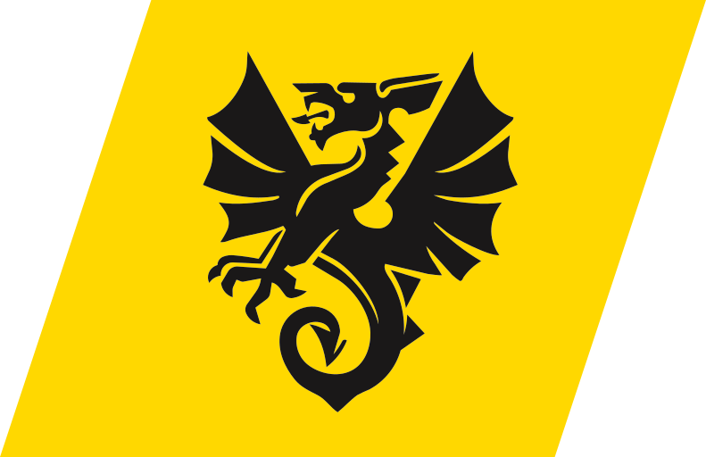
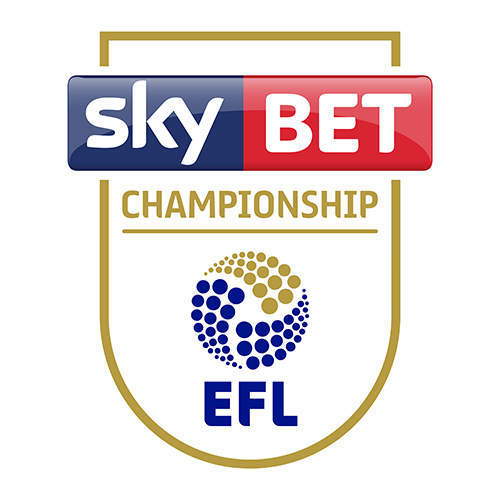
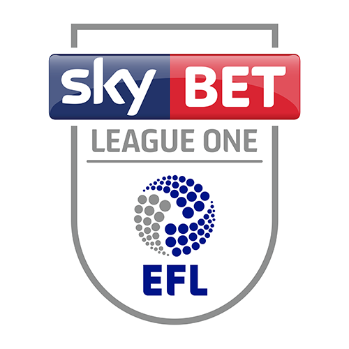

Rhyngwladol
Rhyngwladol
Gemau rhyngwladol dynion Cymru
Gemau rhyngwladol dynion Cymru
Sad 14 Tach17:00
NorwyvCymru
Ullevaal Stadion, Oslo
Maw 17 Tach19:45
CymruvPortiwgal
Cardiff City Stadium
Gemau rhyngwladol eraill y DU ac Ewrop
Gemau rhyngwladol eraill y DU ac Ewrop
Dydd Iau 12 Tachwedd
Iau 12 Tach19:45
LloegrvCroatia
Wembley Stadium, London
Dydd Gwener 13 Tachwedd
Gwe 13 Tach19:45
Yr AlbanvGogledd Macedonia
Hampden Park, Glasgow
Dydd Sadwrn 14 Tachwedd
Sad 14 Tach19:45
AwstriavGweriniaeth Iwerddon
Raiffeisen Arena, Linz
Sad 14 Tach19:45
Gogledd IwerddonvWcráin
Clearer Twist National Stadium at Windsor Park, Belfast
Dydd Sul 15 Tachwedd
Sul 15 Tach19:45
SbaenvLloegr
Riyadh Air Metropolitano, Madrid
Dydd Llun 16 Tachwedd
Llun 16 Tach19:45
Y SwistirvYr Alban
Berit Sitterstadion, St.Gallen
Dydd Mawrth 17 Tachwedd
Maw 17 Tach19:45
HwngarivGogledd Iwerddon
Puskás Aréna, Budapest
Maw 17 Tach19:45
Gweriniaeth IwerddonvCosofo
Aviva Stadium, Dublin
Gemau eraill45 gêm
Iau 12 Tach19:45
LloegrvCroatia
Wembley Stadium, London
Gwe 13 Tach19:45
Yr AlbanvGogledd Macedonia
Hampden Park, Glasgow
Sad 14 Tach19:45
AwstriavGweriniaeth Iwerddon
Raiffeisen Arena, Linz
Sad 14 Tach19:45
Gogledd IwerddonvWcráin
Clearer Twist National Stadium at Windsor Park, Belfast
Sul 15 Tach19:45
SbaenvLloegr
Riyadh Air Metropolitano, Madrid
Llun 16 Tach19:45
Y SwistirvYr Alban
Berit Sitterstadion, St.Gallen
Maw 17 Tach19:45
HwngarivGogledd Iwerddon
Puskás Aréna, Budapest
Maw 17 Tach19:45
Gweriniaeth IwerddonvCosofo
Aviva Stadium, Dublin
Dydd Iau 12 Tachwedd
Iau 12 Tach17:00
ArmeniavCyprus
Republican Stadium after Vazgen Sargsyan, Yerevan
Iau 12 Tach17:00
LithwaniavSurinam
Dariaus ir Girėno stadionas, Kaunas
Iau 12 Tach17:00
TwrcivGwlad Belg
Gürsel Aksel Stadyumu, Izmir
Iau 12 Tach17:30
MaltavEswatini
National Stadium, Ta' Qali
Iau 12 Tach19:45
AlbaniavY Ffindir
Air Albania Stadium, Tirana
Iau 12 Tach19:45
TsieciavSbaen
epet ARENA, Prague
Iau 12 Tach19:45
Yr EidalvFfrainc
Stadio San Siro, Milan
Iau 12 Tach19:45
MontenegrovLatfia
Gradski Stadion Podgorica
Iau 12 Tach19:45
San MarinovBelarws
San Marino Stadium, Serravalle
Dydd Gwener 13 Tachwedd
Gwe 13 Tach17:00
MoldofavCasachstan
Stadionul Zimbru, Chisinau
Gwe 13 Tach19:45
AndorravGibraltar
Estadi FAF, Encamp
Gwe 13 Tach19:45
BwlgariavGwlad yr Iâ
Hristo Botev Stadium, Plovdiv
Gwe 13 Tach19:45
LiechtensteinvAserbaijan
Rheinpark Stadion, Vaduz
Gwe 13 Tach19:45
LwcsembwrgvEstonia
Stade de Luxembourg
Gwe 13 Tach19:45
Yr IseldiroeddvGwlad Groeg
Johan Cruijff ArenA, Amsterdam
Gwe 13 Tach19:45
SerbiavYr Almaen
Stadion Rajko Mitić, Belgrade
Gwe 13 Tach19:45
SlofaciavYnysoedd Ffaröe
Košická Futbalová Aréna, Košice
Gwe 13 Tach19:45
SlofeniavY Swistir
Stadion Ljudski vrt, Maribor
Dydd Sadwrn 14 Tachwedd
Sad 14 Tach14:00
CosofovIsrael
Stadiumi Fadil Vokrri, Pristina
Sad 14 Tach17:00
GeorgiavHwngari
Mikheil Meskhi Stadium, Tbilisi
Sad 14 Tach19:45
PortiwgalvDenmarc
Estádio Municipal de Braga
Sad 14 Tach19:45
RwmaniavGwlad Pwyl
National Arena Bucharest
Sad 14 Tach19:45
SwedenvBosnia a Herzegovina
Strawberry Arena, Solna
Dydd Sul 15 Tachwedd
Sul 15 Tach14:00
CyprusvMontenegro
Alphamega Stadium, Limassol
Sul 15 Tach14:00
LatfiavArmenia
Skonto Stadions, Riga
Sul 15 Tach17:00
BelarwsvAlbania
Illovszky Rudolf Stadion, Budapest
Sul 15 Tach17:00
Y FfindirvSan Marino
Bolt Arena, Helsinki
Sul 15 Tach19:45
Gwlad BelgvYr Eidal
King Baudouin Stadium, Brussels
Sul 15 Tach19:45
CroatiavTsiecia
Opus Arena, Osijek
Sul 15 Tach19:45
FfraincvTwrci
Matmut Atlantique, Bordeaux
Dydd Llun 16 Tachwedd
Llun 16 Tach15:00
Ynysoedd FfaröevMoldofa
Tórsvøllur, Tórshavn
Llun 16 Tach15:00
CasachstanvSlofacia
Astana Arena
Llun 16 Tach17:00
EstoniavBwlgaria
A. Le Coq Arena, Tallinn
Llun 16 Tach17:00
Gwlad yr IâvLwcsembwrg
Laugardalsvöllur, Reykjavik
Llun 16 Tach17:00
LithwaniavLiechtenstein
Dariaus ir Girėno stadionas, Kaunas
Llun 16 Tach18:00
AndorravAserbaijan
Estadi FAF, Encamp
Llun 16 Tach19:45
Yr AlmaenvYr Iseldiroedd
Olympiastadion, Berlin
Llun 16 Tach19:45
GibraltarvMalta
Europa Point Stadium, Gibraltar
Llun 16 Tach19:45
Gwlad GroegvSerbia
Panthessaliko, Volos
Llun 16 Tach19:45
Gogledd MacedoniavSlofenia
National Arena Todor Proeski, Skopje
Dydd Mawrth 17 Tachwedd
Maw 17 Tach19:45
Bosnia a HerzegovinavRwmania
Stadion Bilino Polje, Zenica
Maw 17 Tach19:45
DenmarcvNorwy
Parken – Connected by 3, Copenhagen
Maw 17 Tach19:45
IsraelvAwstria
Nagyerdei Stadion, Debrecen
Maw 17 Tach19:45
Gwlad PwylvSweden
Tarczynski Arena Wroclaw
Maw 17 Tach19:45
WcráinvGeorgia
Košická Futbalová Aréna, Košice

Cymru

Cymru
 Novira Cymru North
Novira Cymru North
Novira Cymru North
Sad 21 Tach14:00
Holyhead HotspurvBala Town
The New OvalLL65 2YE
Sad 21 Tach14:00
Brickfield RangersvNewtown
Clywedog ParkLL14 4HE
Gemau eraill8 gêm
Sad 21 Tach14:00
Holyhead HotspurvBala Town
The New OvalLL65 2YE
Sad 21 Tach14:00
Brickfield RangersvNewtown
Clywedog ParkLL14 4HE
Gwe 13 Tach19:30
Denbigh TownvGresford Athletic
I'w gadarnhau
Sad 14 Tach14:00
LlanuwchllynvRhyl 1879
I'w gadarnhau
Sad 21 Tach14:00
CaerswsvDenbigh Town
I'w gadarnhau
Sad 21 Tach14:00
Gresford AthleticvBuckley Town
I'w gadarnhau
Sad 21 Tach14:00
GuilsfieldvBangor City 1876
I'w gadarnhau
Sad 21 Tach14:00
LlanuwchllynvRuthin Town
I'w gadarnhau
Sad 21 Tach14:00
Mold AlexandravPorthmadog
I'w gadarnhau
Sad 21 Tach14:00
PenrhyncochvRhyl 1879
I'w gadarnhau
Cwpan Cymru CBDC
Cwpan Cymru CBDC
Sad 14 Tach14:00
Holyhead HotspurvBlaen-y-Maes
The New OvalLL65 2YE
Sad 14 Tach14:00
Caerau ElyvBrickfield Rangers
I'w gadarnhau
Gemau eraill14 gêm
Sad 14 Tach14:00
Holyhead HotspurvBlaen-y-Maes
The New OvalLL65 2YE
Sad 14 Tach14:00
Caerau ElyvBrickfield Rangers
I'w gadarnhau
Gwe 13 Tach19:45
Baglan DragonsvBarry Town United
I'w gadarnhau
Gwe 13 Tach19:45
Caernarfon TownvHolywell Town
I'w gadarnhau
Gwe 13 Tach19:45
Connah's Quay NomadsvMochdre Sports
I'w gadarnhau
Gwe 13 Tach19:45
PenybontvCardiff Draconians
I'w gadarnhau
Gwe 13 Tach19:45
The New SaintsvBriton Ferry Llansawel
I'w gadarnhau
Sad 14 Tach14:00
Colwyn BayvAberystwyth Town
I'w gadarnhau
Sad 14 Tach14:00
Haverfordwest CountyvAmmanford
I'w gadarnhau
Sad 14 Tach14:00
LlandudnovFelinheli
I'w gadarnhau
Sad 14 Tach14:00
LlangennechvNewport City
I'w gadarnhau
Sad 14 Tach14:00
NewtownvCaerphilly Athletic
I'w gadarnhau
Sad 14 Tach14:15
RockspurvPontarddulais Town
I'w gadarnhau
Sad 14 Tach15:00
Cardiff MetvDolgellau AA
I'w gadarnhau
Sad 14 Tach17:30
TrefelinvCoedpoeth United
I'w gadarnhau
Sul 15 Tach17:35
Cambrian UnitedvBangor City 1876
I'w gadarnhau
Lloegr
Lloegr
Uwch Gynghrair Lloegr
Uwch Gynghrair Lloegr
Sad 21 Tach15:00
ChelseavLeeds United
Stamford Bridge
Sul 22 Tach16:30
LiverpoolvManchester United
Anfield
Gemau eraill7 gêm
Sad 21 Tach15:00
ChelseavLeeds United
Stamford Bridge
Sul 22 Tach16:30
LiverpoolvManchester United
Anfield
Sad 21 Tach12:30
Manchester CityvFulham
Etihad Stadium
Sad 21 Tach15:00
Aston VillavSunderland
Villa Park
Sad 21 Tach15:00
BournemouthvNottingham Forest
Vitality Stadium
Sad 21 Tach15:00
Coventry CityvCrystal Palace
Coventry Building Society Arena
Sad 21 Tach15:00
Tottenham HotspurvIpswich Town
Tottenham Hotspur Stadium
Sad 21 Tach17:30
Newcastle UnitedvArsenal
St. James' Park
Sul 22 Tach14:00
Hull CityvBrighton & Hove Albion
The MKM Stadium

Y Bencampwriaeth

Y Bencampwriaeth
Sad 21 Tach15:00
Lincoln CityvWrexham
LNER Stadium
Gemau eraill11 gêm
Sad 21 Tach15:00
Lincoln CityvWrexham
LNER Stadium
Sad 21 Tach12:30
MillwallvQueens Park Rangers
The Den
Sad 21 Tach12:30
Norwich CityvCardiff City
Carrow Road
Sad 21 Tach12:30
SouthamptonvDerby County
St Mary's Stadium
Sad 21 Tach15:00
Bolton WanderersvPortsmouth
University of Bolton Stadium
Sad 21 Tach15:00
MiddlesbroughvBristol City
Riverside Stadium
Sad 21 Tach15:00
Sheffield UnitedvWatford
Bramall Lane
Sad 21 Tach15:00
Stoke CityvBirmingham City
bet365 Stadium
Sad 21 Tach15:00
Swansea CityvWest Bromwich Albion
Swansea.com Stadium
Sad 21 Tach15:00
West Ham UnitedvPreston North End
London Stadium
Sad 21 Tach15:00
Wolverhampton WanderersvCharlton Athletic
Molineux Stadium
Sul 22 Tach12:00
BurnleyvBlackburn Rovers
Turf Moor

Cynghrair Un

Cynghrair Un
Sad 14 Tach15:00
Sheffield WednesdayvPlymouth Argyle
Hillsborough Stadium
Sad 21 Tach15:00
Plymouth ArgylevPeterborough United
Home Park
Sad 14 Tach15:00
MK DonsvBurton Albion
Stadium MK
Sad 21 Tach15:00
Mansfield TownvMK Dons
One Call Stadium
Gemau eraill19 gêm
Sad 14 Tach15:00
Sheffield WednesdayvPlymouth Argyle
Hillsborough Stadium
Sad 21 Tach15:00
Plymouth ArgylevPeterborough United
Home Park
Sad 14 Tach15:00
MK DonsvBurton Albion
Stadium MK
Sad 21 Tach15:00
Mansfield TownvMK Dons
One Call Stadium
Sad 14 Tach15:00
AFC WimbledonvBlackpool
Cherry Red Records Stadium
Sad 14 Tach15:00
BromleyvNotts County
Hayes Lane
Sad 14 Tach15:00
Doncaster RoversvLeyton Orient
The Eco-Power Stadium
Sad 14 Tach15:00
Leicester CityvBradford City
King Power Stadium
Sad 14 Tach15:00
Luton TownvCambridge United
Kenilworth Road
Sad 14 Tach15:00
StevenagevMansfield Town
The Lamex Stadium
Sad 14 Tach15:00
Stockport CountyvReading
Edgeley Park
Sad 14 Tach15:00
Wigan AthleticvBarnsley
DW Stadium
Sad 14 Tach15:00
Wycombe WanderersvHuddersfield Town
Adams Park
Gwe 20 Tach20:00
BarnsleyvSheffield Wednesday
Oakwell Stadium
Sad 21 Tach12:30
BlackpoolvWigan Athletic
Bloomfield Road
Sad 21 Tach12:30
ReadingvBromley
The Select Car Leasing Stadium
Sad 21 Tach15:00
Bradford CityvDoncaster Rovers
University of Bradford Stadium
Sad 21 Tach15:00
Burton AlbionvLuton Town
Pirelli Stadium
Sad 21 Tach15:00
Cambridge UnitedvStockport County
Abbey Stadium
Sad 21 Tach15:00
Huddersfield TownvLeicester City
The John Smith's Stadium
Sad 21 Tach15:00
Leyton OrientvAFC Wimbledon
Breyer Group Stadium
Sad 21 Tach15:00
Notts CountyvStevenage
Meadow Lane
Sad 21 Tach15:00
Oxford UnitedvWycombe Wanderers
Kassam Stadium
Southern League Premier South
Southern League Premier South
Sad 14 Tach15:00
Hanwell TownvPlymouth Parkway
Oliver Connell and Sons Community Stadium
Sad 21 Tach15:00
Plymouth ParkwayvMalvern Town
Bolitho ParkCod post heb ei ganfod
Gemau eraill25 gêm
Sad 14 Tach15:00
Hanwell TownvPlymouth Parkway
Oliver Connell and Sons Community Stadium
Sad 21 Tach15:00
Plymouth ParkwayvMalvern Town
Bolitho ParkCod post heb ei ganfod
Sad 14 Tach15:00
Basingstoke TownvChippenham Town
Winklebury Football Complex
Sad 14 Tach15:00
Bath CityvBerkhamsted
Cannon Clarke Stadium @ Twerton Park
Sad 14 Tach15:00
Bracknell TownvUxbridge
The SB Stadium
Sad 14 Tach15:00
Chertsey TownvWimborne Town
Alwyns Lane
Sad 14 Tach15:00
Evesham UnitedvGosport Borough
The Spiers & Hartwell Jubilee Stadium
Sad 14 Tach15:00
Frome TownvHanworth Villa
Badgers Hill Stadium
Sad 14 Tach15:00
Gloucester CityvSholing
KMM Energy Stadium
Sad 14 Tach15:00
Havant & WaterloovillevYate Town
Westleigh Park
Sad 14 Tach15:00
Malvern TownvChichester City
HDAnywhere Community Stadium
Sad 14 Tach15:00
Poole TownvTaunton Town
Clear Group Stadium
Maw 17 Tach19:45
Chippenham TownvSholing
Thornbury Surfacing Ltd Stadium
Maw 17 Tach19:45
Havant & WaterloovillevBracknell Town
Westleigh Park
Maw 17 Tach19:45
Poole TownvWimborne Town
Clear Group Stadium
Mer 18 Tach19:45
Frome TownvGloucester City
Badgers Hill Stadium
Mer 18 Tach19:45
Gosport BoroughvChertsey Town
AEI Stadium
Sad 21 Tach15:00
BerkhamstedvFrome Town
The Glencar Community Stadium
Sad 21 Tach15:00
Chichester CityvBasingstoke Town
Oaklands Park
Sad 21 Tach15:00
Chippenham TownvBracknell Town
Thornbury Surfacing Ltd Stadium
Sad 21 Tach15:00
Gosport BoroughvHavant & Waterlooville
AEI Stadium
Sad 21 Tach15:00
Hanworth VillavPoole Town
Rectory Meadow
Sad 21 Tach15:00
SholingvEvesham United
The Mortgage Decisions Stadium
Sad 21 Tach15:00
Taunton TownvChertsey Town
Wordsworth Drive
Sad 21 Tach15:00
UxbridgevGloucester City
Uxbridge FC
Sad 21 Tach15:00
Wimborne TownvBath City
Wyatt Homes Stadium
Sad 21 Tach15:00
Yate TownvHanwell Town
South West Interiors Stadium
Cyn i chi deithio
Mae rhai o'r nodiadau technegol isod yn Saesneg yn unig.
Gwahaniaethau rhwng ffynonellau
- Other UK and European internationals: ESPN lists Surinam v Eswatini on Sun 15 Nov, but UEFA (official feed) does not. It was not added.
- Other UK and European internationals: sources name the venue differently for 18 games (sponsor names or spelling). The first source's name is shown. Example: (UEFA (official feed) "Tarczynski Arena Wroclaw", ESPN "Municipal Stadium Wroclaw").
- Southern League Premier South: sources name the venue differently for 1 game (sponsor names or spelling). The first source's name is shown. Example: (Southern League (official feed) "Oliver Connell and Sons Community Stadium", Plymouth Parkway website "The Powerday Stadium").
Gohiriadau
- Cynghrair Un: Gohiriwyd Bromley v Notts County, Sad 14 Tach. Peidiwch â theithio nes bod dyddiad newydd.
- Cynghrair Un: Gohiriwyd Doncaster Rovers v Leyton Orient, Sad 14 Tach. Peidiwch â theithio nes bod dyddiad newydd.
- Cynghrair Un: Gohiriwyd Leicester City v Bradford City, Sad 14 Tach. Peidiwch â theithio nes bod dyddiad newydd.
- Cynghrair Un: Gohiriwyd Luton Town v Cambridge United, Sad 14 Tach. Peidiwch â theithio nes bod dyddiad newydd.
- Cynghrair Un: Gohiriwyd Stevenage v Mansfield Town, Sad 14 Tach. Peidiwch â theithio nes bod dyddiad newydd.
- Cynghrair Un: Gohiriwyd Wycombe Wanderers v Huddersfield Town, Sad 14 Tach. Peidiwch â theithio nes bod dyddiad newydd.
- Southern League Premier South: Gohiriwyd Bath City v Berkhamsted, Sad 14 Tach. Peidiwch â theithio nes bod dyddiad newydd.
- Southern League Premier South: Gohiriwyd Bracknell Town v Uxbridge, Sad 14 Tach. Peidiwch â theithio nes bod dyddiad newydd.
- Southern League Premier South: Gohiriwyd Chertsey Town v Wimborne Town, Sad 14 Tach. Peidiwch â theithio nes bod dyddiad newydd.
- Southern League Premier South: Gohiriwyd Malvern Town v Chichester City, Sad 14 Tach. Peidiwch â theithio nes bod dyddiad newydd.
- Wales men's internationals: postponements checked in UEFA (official feed), ESPN, Sky Sports; none marked postponed.
- Other UK and European internationals: postponements checked in UEFA (official feed), ESPN; none marked postponed.
- Novira Cymru North: postponements could not be checked: none of the sources for this section report them, or none could be read. Check the clubs before travelling.
- FAW Welsh Cup: postponements could not be checked: none of the sources for this section report them, or none could be read. Check the clubs before travelling.
- Premier League: postponements checked in Premier League (official feed), Sky Sports; none marked postponed.
- Championship: postponements checked in EFL (official feed), Sky Sports; none marked postponed.
- League One: postponements checked in EFL (official feed), Sky Sports; 6 marked postponed (listed above).
- Southern League Premier South: postponements checked in Southern League (official feed), Plymouth Parkway website (Plymouth Parkway games only); 4 marked postponed (listed above).
I'w gadarnhau
- Novira Cymru North: lleoliad i'w gadarnhau ar gyfer Denbigh Town v Gresford Athletic, Gwe 13 Tach.
- Novira Cymru North: lleoliad i'w gadarnhau ar gyfer Llanuwchllyn v Rhyl 1879, Sad 14 Tach.
- Novira Cymru North: lleoliad i'w gadarnhau ar gyfer Caersws v Denbigh Town, Sad 21 Tach.
- Novira Cymru North: lleoliad i'w gadarnhau ar gyfer Gresford Athletic v Buckley Town, Sad 21 Tach.
- Novira Cymru North: lleoliad i'w gadarnhau ar gyfer Guilsfield v Bangor City 1876, Sad 21 Tach.
- Novira Cymru North: lleoliad i'w gadarnhau ar gyfer Llanuwchllyn v Ruthin Town, Sad 21 Tach.
- Novira Cymru North: lleoliad i'w gadarnhau ar gyfer Mold Alexandra v Porthmadog, Sad 21 Tach.
- Novira Cymru North: lleoliad i'w gadarnhau ar gyfer Penrhyncoch v Rhyl 1879, Sad 21 Tach.
- Cwpan Cymru CBDC: lleoliad i'w gadarnhau ar gyfer Baglan Dragons v Barry Town United, Gwe 13 Tach.
- Cwpan Cymru CBDC: lleoliad i'w gadarnhau ar gyfer Caernarfon Town v Holywell Town, Gwe 13 Tach.
- Cwpan Cymru CBDC: lleoliad i'w gadarnhau ar gyfer Connah's Quay Nomads v Mochdre Sports, Gwe 13 Tach.
- Cwpan Cymru CBDC: lleoliad i'w gadarnhau ar gyfer Penybont v Cardiff Draconians, Gwe 13 Tach.
- Cwpan Cymru CBDC: lleoliad i'w gadarnhau ar gyfer The New Saints v Briton Ferry Llansawel, Gwe 13 Tach.
- Cwpan Cymru CBDC: lleoliad i'w gadarnhau ar gyfer Caerau Ely v Brickfield Rangers, Sad 14 Tach.
- Cwpan Cymru CBDC: lleoliad i'w gadarnhau ar gyfer Colwyn Bay v Aberystwyth Town, Sad 14 Tach.
- Cwpan Cymru CBDC: lleoliad i'w gadarnhau ar gyfer Haverfordwest County v Ammanford, Sad 14 Tach.
- Cwpan Cymru CBDC: lleoliad i'w gadarnhau ar gyfer Llandudno v Felinheli, Sad 14 Tach.
- Cwpan Cymru CBDC: lleoliad i'w gadarnhau ar gyfer Llangennech v Newport City, Sad 14 Tach.
- Cwpan Cymru CBDC: lleoliad i'w gadarnhau ar gyfer Newtown v Caerphilly Athletic, Sad 14 Tach.
- Cwpan Cymru CBDC: lleoliad i'w gadarnhau ar gyfer Rockspur v Pontarddulais Town, Sad 14 Tach.
- Cwpan Cymru CBDC: lleoliad i'w gadarnhau ar gyfer Cardiff Met v Dolgellau AA, Sad 14 Tach.
- Cwpan Cymru CBDC: lleoliad i'w gadarnhau ar gyfer Trefelin v Coedpoeth United, Sad 14 Tach.
- Cwpan Cymru CBDC: lleoliad i'w gadarnhau ar gyfer Cambrian United v Bangor City 1876, Sul 15 Tach.
Rhybuddion
- Heb eu dangos yr wythnos hon, gan nad oes unrhyw un o'r timau a enwir (config/teams.json) yn chwarae: Cwpan yr FA, Tlws yr FA, Cynghrair y Pencampwyr UEFA, Cynghrair Europa UEFA.
- Novira Cymru North: The FAW page lists no venues. Grounds come from the stored lookup (data/postcodes.json) where known; other venues are TBC.
- Novira Cymru North: LL14 4HE for Clywedog Park comes from a single source.
- Novira Cymru North: LL65 2YE is less certain: it is believed to be the postcode of the leisure centre opposite the ground.
- Novira Cymru North: No postcode stored yet for 7 of 9 home grounds: Caersws, Denbigh Town, Gresford Athletic, Guilsfield, Llanuwchllyn, Mold Alexandra, Penrhyncoch. Add one with: node scripts/postcodes.mjs add "Team" "AB1 2CD"
- FAW Welsh Cup: The FAW page lists no venues. Grounds come from the stored lookup (data/postcodes.json) where known; other venues are TBC.
- FAW Welsh Cup: LL65 2YE is less certain: it is believed to be the postcode of the leisure centre opposite the ground.
- FAW Welsh Cup: 1 venue(s) come from the stored home grounds (data/postcodes.json). A cup tie is not always played at the home club's usual ground.
- FAW Welsh Cup: No postcode stored yet for 15 of 16 home grounds: Baglan Dragons, Caerau Ely, Caernarfon Town, Cambrian United, Cardiff Met, Colwyn Bay, Connah's Quay Nomads, Haverfordwest County, Llandudno, Llangennech, Newtown, Penybont and 3 more. Add one with: node scripts/postcodes.mjs add "Team" "AB1 2CD"
- Championship: The EFL team feed lists no stadium for Wolverhampton Wanderers, Sheffield United, Burnley, West Ham United. Their grounds come from the fallback list in config/teams.json, not from a feed.
- League One: The EFL team feed lists no stadium for Luton Town, Bromley. Their grounds come from the fallback list in config/teams.json, not from a feed.
- Southern League Premier South: BetExplorer gives a date and time for only some games, so it can cross-check only those. It can also omit postponed games, so it is not used to rule out postponements.
- Southern League Premier South: No postcode stored yet for 22 of 22 home grounds: Basingstoke Town, Bath City, Berkhamsted, Bracknell Town, Chertsey Town, Chichester City, Chippenham Town, Evesham United, Frome Town, Gloucester City, Gosport Borough, Hanwell Town and 10 more. Add one with: node scripts/postcodes.mjs add "Team" "AB1 2CD"
Ffynonellau
- Gemau rhyngwladol dynion Cymru: UEFA (official feed) (prif restr); ESPN (croeswirio); Sky Sports (croeswirio).
- Gemau rhyngwladol eraill y DU ac Ewrop: UEFA (official feed) (prif restr); ESPN (croeswirio).
- Novira Cymru North: FAW Cymru Leagues website (prif restr).
- Cwpan Cymru CBDC: FAW Welsh Cup website (prif restr).
- Uwch Gynghrair Lloegr: Premier League (official feed) (prif restr); Sky Sports (croeswirio).
- Y Bencampwriaeth: EFL (official feed) (prif restr); Sky Sports (croeswirio).
- Cynghrair Un: EFL (official feed) (prif restr); Sky Sports (croeswirio).
- Southern League Premier South: Southern League (official feed) (prif restr); Plymouth Parkway website (croeswirio); BetExplorer (croeswirio).
Gwiriwyd am
2026-11-12 14:01 GMT (amser y DU)